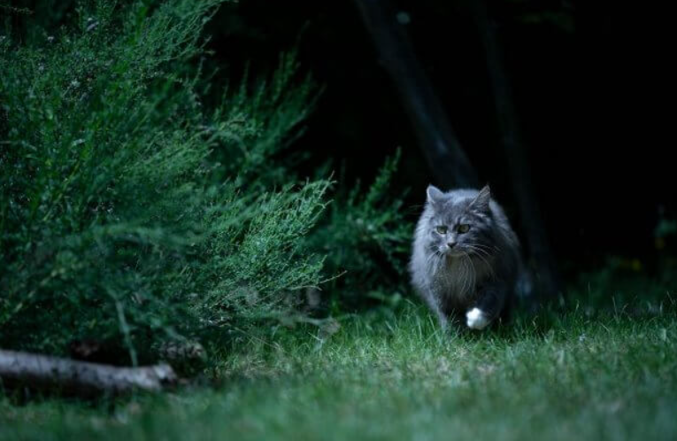

Mike se dirige al bosque, buscando el origen de los ruidos misteriosos. Después de caminar por un rato, llega a una bifurcación en el sendero
A la izquierda, se puede ver a lo lejos una cabaña con las luces encendidas. Los ruidos no parecen provenir de allí.
A la derecha, se ve un barranco donde se puede percatar el movimiento de sombras y de árboles. Es probable que el ruido provenga de allí.
Es tu turno de decidir qué ruta tomar de aquí.